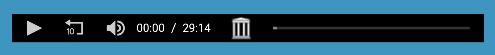
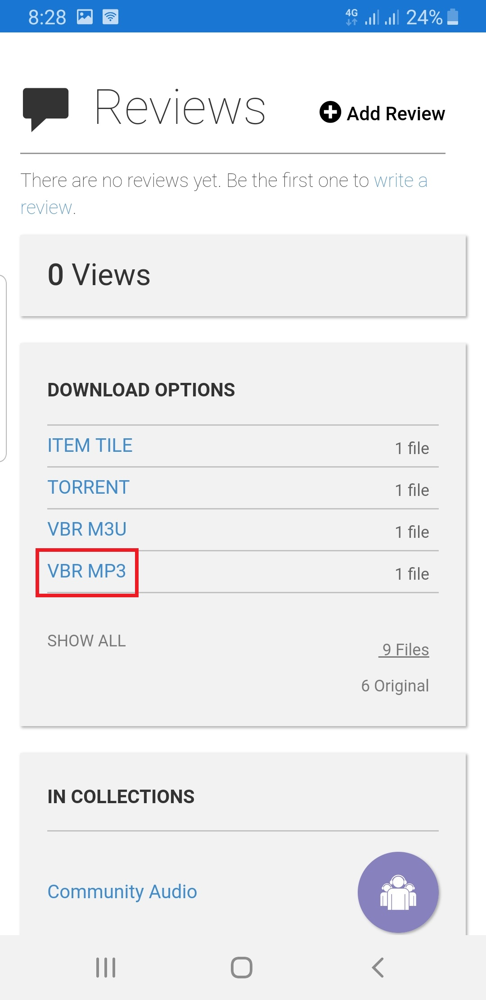
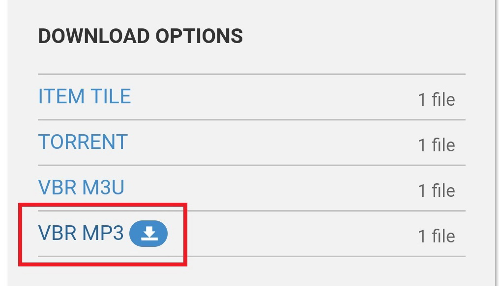
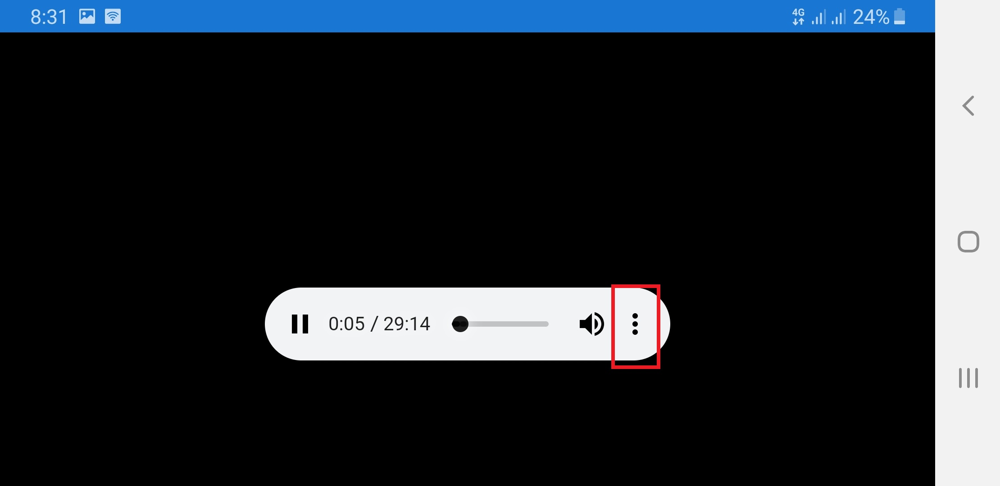
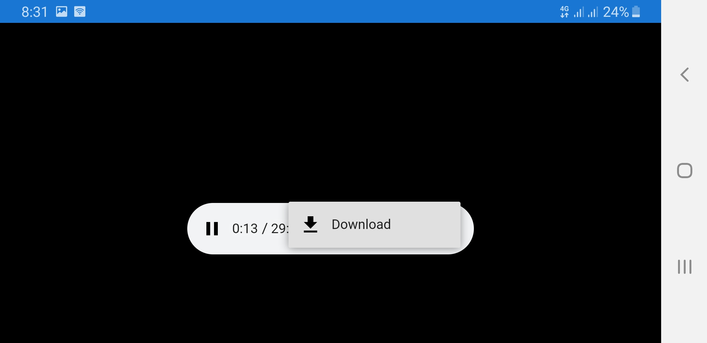

باسم الثالوث القدوس
كيفية تنزيل ملفات الصوت على جهازك
من مشغل الصوت أعلى الصفحة

إضغط على زر البيت
مرر الصفحة لأسفل وإختر
VBR MP3
من قائمة
DOWNLOAD OPTIONS

إضغط على السهم الذى سيظهر لك

سوف يفتح مشغل جديد به 3 نقاط عمودية على اليمين

إضغط عليها فسيظهر لك زر
DWONLOAD

تكرر هذه العملية مع كل جزء تريد نزوله على جهازك